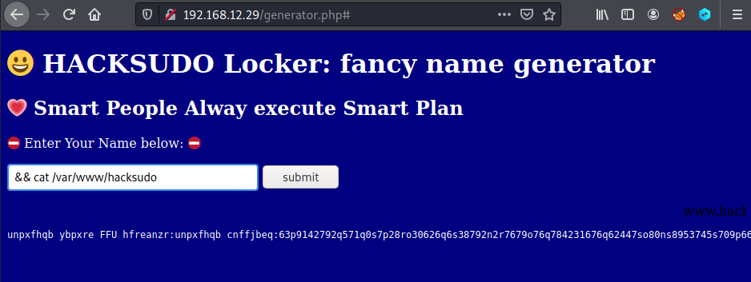
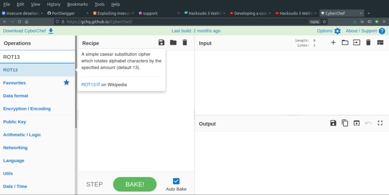
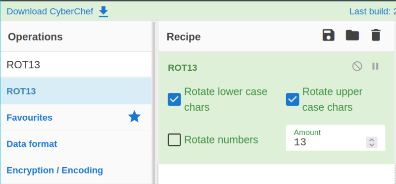
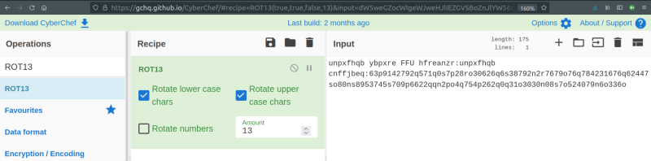
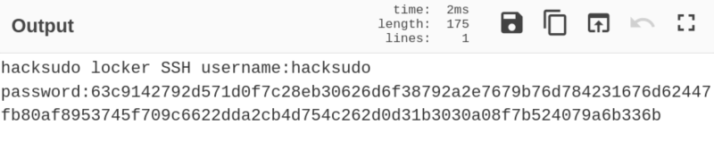
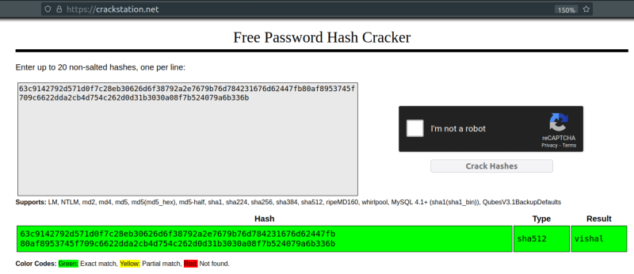

4.1 Get user credentials
Spawn a “Reverse Shell”
1. Show the contents of the previous seen “hacksudo" file typing the following command in the field.

unpxfhqb ybpxre FFU hfreanzr:unpxfhqb cnffjbeq:63p9142792q571q0s7p28ro30626q6s38792n2r7679o76q784231676q62447so80ns8953745s709p6622qqn2po4q754p262q0q31o3030n08s7o524079n6o336oYou got can see that there are words which are jumbled. Hence, this cannot be a hash.
2. You can use Cyberchef in order to decipher the hash using caeser cipher (ROT13). In ROT13, the characters are rotated 13 characters ahead. That is to say, ‘a’ become ‘n’, ‘b’ becomes ‘o’ and so on. To do that, I dragged the ROT13 operation to my recipe and checked the result.
1. Search “ROT13”.

2. Double-click the “ROT13” option.

3. Copy your hash in the “Input” panel.

4. You'll see the decoded hash in the “Output” panel.

So, the hacksudo's hashed password is:
“63c9142792d571d0f7c28eb30626d6f38792a2e7679b76d784231676d62447fb80af8953745f709c6622dda2cb4d754c262d0d31b3030a08f7b524079a6b336b”
5. Crack it using https://crackstation.net/.

The password is “vishal”.